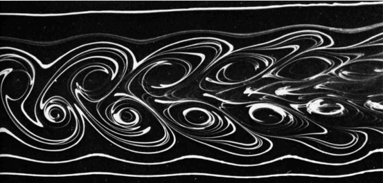
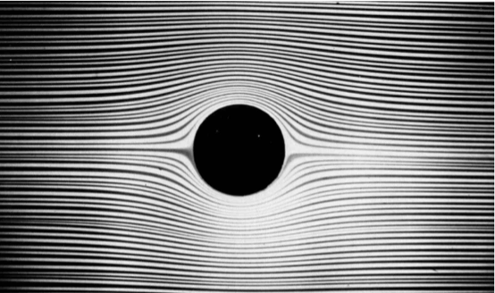
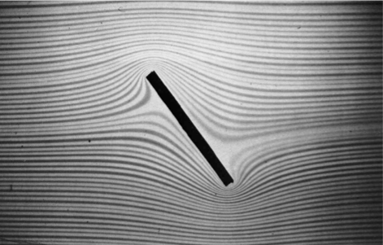
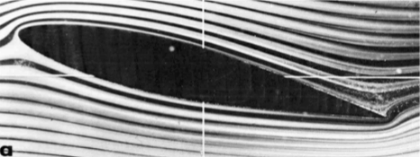
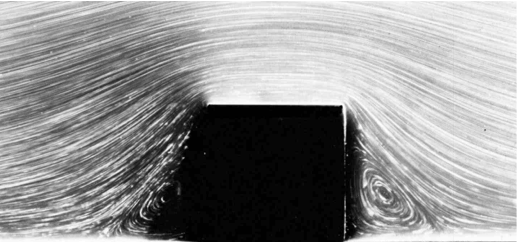
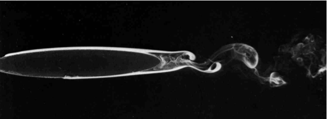
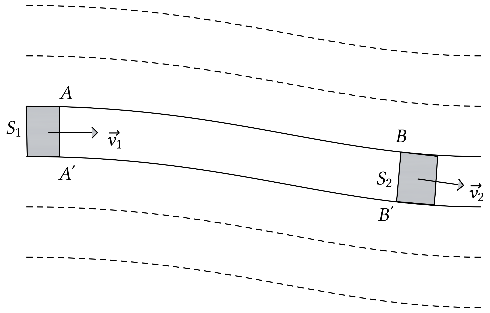

1On ne peut pas étudier le mouvement
d'un fluide comme celui d'un solide
La mécanique des fluides est très différente de la
mécanique du solide dont une introduction a été
formulée cette année.
Un fluide est constitué d'un très grande nombre
d'entités microscopiques qui entrent en collision les unes
avec les autres sans cesse. Une application sans adaptation des lois
de la mécanique, introduites cette année, à
chacune de ces entités nécessiterait donc de
résoudre à chaque instant environ équations différentielles, ce qui est
impossible.
Un fluide doit donc être abordé différemment : on
se place à une échelle intermédiaire entre le
monde microscopique et le monde macroscopique,
l'échelle mésoscopique. À
cette échelle, la matière est toujours
considérée comme continue, mais on isole, par la
pensée, des particules de fluide.
L'objet de la mécanique des fluides est d'étudier et de
prédire le comportement des particules de fluide.
2Qu'est-ce qu'une ligne de courant ?
En pratique, comment suivre le mouvement d'une particule de fluide
?
On peut injecter dans le liquide quelque gouttes d'un colorant (ou de
la fumée si le fluide est un gaz) et prendre une photographie
avec un temps de pose très long (on laisse
s'écouler le temps).
Une ligne de courant est la trajectoire d'une
particule de fluide.
En chaque point de l'espace la droite tangente à la ligne de
courant est la direction du vecteur vitesse en ce
point. Un vecteur vitesse  ,
en mécanique des fluides, n'est pas attaché à une
particule de fluide mais représente la vitesse, à
l'instant , de toute
particule de fluide se trouvant en ce point de l'espace.
L'ensemble des vecteurs vitesses forme le champ des vecteurs
vitesses.
,
en mécanique des fluides, n'est pas attaché à une
particule de fluide mais représente la vitesse, à
l'instant , de toute
particule de fluide se trouvant en ce point de l'espace.
L'ensemble des vecteurs vitesses forme le champ des vecteurs
vitesses.
Le point de vue développé en mécanique est donc
très différent de celui utilisé en mécanique
du solide ;
Note. En fait, le formalisme de la mécanique des
fluides est identique au formalisme utilisé en
électromagnétisme. La plupart des opérateurs
mathématique utilisés en électromagnétisme
ont un nom qui traduit cette similitude.

En pratique, comment peut-on visualiser le champ des vitesses
?
On peut injecter dans le liquide quelque gouttes d'un colorant (ou de
la fumée si le fluide est un gaz) en plusieurs endroits du
fluide et prendre une photographie avec un temps de pose
court.
3Écoulement d'un fluide
L'écoulement d'un fluide peut-être :
3.1Écoulement stationnaire
Un écoulement est dit stationnaire si ses
caractéristiques ne varient pas au cours du temps. Les
lignes de courant n'évoluent alors pas au cours du
temps.
Un écoulement stationnaire n'implique pas que la
vitesse d'une particule de fluide soit constante au cours du
temps. Par contre, toutes les particules de fluide passant au
même point de l'espace possèdent alors le même
vecteur vitesse.
3.2Écoulements laminaires,
turbulents
Un écoulement est dit laminaire si deux
particules de fluide voisines à un instant donné restent
voisines aux instants suivants. L'ensemble du fluide
s'écoule alors plus ou moins dans la même direction
Les lignes de courant d'un écoulement laminaire sont «
parallèles » et la vitesse de l'écoulement est
généralement petite.
|  |
|
Figure 1. Écoulement laminaire autour
d'un obstacle.
|
|  |
|
Figure 2. Écoulement laminaire autour
d'un obstacle.
|
|  |
|
Figure 3. Écoulement laminaire autour
d'une aile. Les lignes de courant épousent la forme de
l'obstacle.
|
Un écoulement turbulent correspond à un
mouvement irrégulier, chaotique et variable. Si les
molécules d'un fluide ont une grande vitesse et rencontre un
obstacle, elles tournoient en petits tourbillons ; les lignes de
courant forment alors des boucles. L'écoulement ne suit plus
les contours de l'obstacle.
|  |
|
Figure 4. Écoulement turbulent en
arrière de l'obstacle. Les lignes de courant
n'épousent pas la forme de l'obstacle.
|
|  |
|
Figure 5. Fumée à
l'arrière d'un obstacle elliptique.
|
Note. Dans la suite de ce chapitre tous les
écoulements seront considérés stationnaires et
laminaires.
4Quelle grandeur se conserve lors de
l'écoulement stationnaire d'un fluide ?
En mécanique des fluides, comme en mécanique des
solides, la masse se conserve.

On isole par la pensée un tube de courant
dans un fluide en écoulement. Puisque la masse se conserve, la
masse de fluide qui entre dans le tube pendant
 secondes doit être égale à
la masse de fluide qui quitte le tube pendant
ces mêmes secondes.
secondes doit être égale à
la masse de fluide qui quitte le tube pendant
ces mêmes secondes.
On a
où est la masse volumique du fluide au
point considéré et le volume
occupé par la masse de fluide entrant ou sortant du tube. Comme
ce dernier volume forme un parallélépipède
rectangle pour une durée suffisamment
petite,
où  est le module de la vitesse du fluide
au point considéré. On a donc
est le module de la vitesse du fluide
au point considéré. On a donc
Attention !
Lorsque l'écoulement est simplement stationnaire, , ,
et .
On appelle débit massique la grandeur
Elle représente la masse qui traverse la surface S chaque
seconde.
et peuvent donc
s'écrire
La conservation de la masse implique donc
Lors de l'écoulement stationnaire d'un fluide, il y a
conservation du débit massique.

Si le fluide est incompressible, sa masse volumique est constante en
tout point, donc  . On
constate alors que non seulement
. On
constate alors que non seulement
mais
On appelle débit volumique la grandeur
Elle représente le volume qui traverse la surface S chaque
seconde.
La relation précédente s'écrit, en utilisant le
débit volumique
Lors de l'écoulement stationnaire d'un
fluide incompressible, il y a conservation du
débit volumique.
Ces relations impliquent que lorsque la section d'une canalisation
augmente, la vitesse du fluide diminue. De même, si la vitesse
d'un fluide augmente, la section du tube de courant diminue.